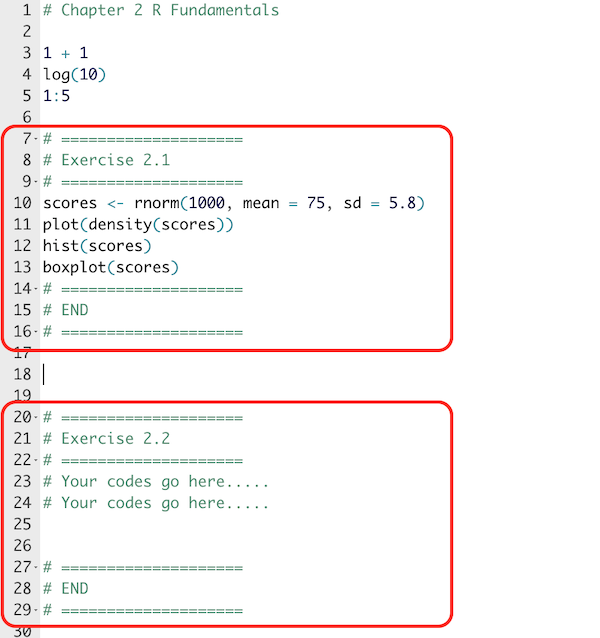

Chapter 3 Code Format Convention
Like the first time we learn English writing, we need to know the conventional writing styles and formats in coding as well. This is very important because scripts of good formats would increase their readability. This would save us a lot of time in case of future debugging and maintenance.
This chapter will discuss common practices among most R users.
3.1 Assignment <-
In R, people normally use <- to assign values to object names. In other languages such as Python, people often use =. Although R still understands the value-assignment when you use =, I would still suggest using <- to avoid the chance of confusing your R kernel.
x1 <- "This is a sentence." ## recommended
x2 = "This is a sentence." ## not recommended
x1[1] "This is a sentence."x2[1] "This is a sentence."3.2 Comment #
When you write codes, you would need to commit your code extensively. This is very important because we often forget why and how we write it this way. Each line of your R script can include comments by placing any strings after the # character. These comments are ignored by R and are not processed. To improve the readability of your code, you can use additional symbol characters (e.g., - and =) after the # to separate different code chunks.
# ====================
# Variable Assignment
# ====================
x <- "This is a sentence"
# ====================
# Variable Printing
# ====================
x[1] "This is a sentence"3.3 Script Naming
When naming your R script files, it is important to use meaningful strings that are composed of alphanumeric characters only. It is not advisable to use Chinese characters.
For multi-word names, it is suggested to connect words using a hyphen - to improve readability and avoid any potential confusion. It is important to avoid being overly creative when naming your files to ensure that they are easily identifiable and understood by others.
# Recommended
my-first-script.R
my-first-assignment.R
# NOT Recommended
my first script.R
語料庫assingment1.R3.4 Object Naming
As you work on your script, you’ll be creating numerous objects. It’s important to take some time to carefully consider how you name each of these objects. Choose names that are both intuitive and meaningful. While it’s tempting to keep names simple for the sake of ease in typing, it’s important to prioritize clarity and ease of understanding.
Here are some principles:
- Use nouns for the
objectnames (e.g.,PTT_corpus) - Use verbs for the
functionnames (e.g.,generate_ngrams()) - Connect multiword names with
_(e.g.,PTT_corpus_segmented) - Avoid using characters/strings that have been used by R (e.g.,
vector,c,mean,sum,Tetc.)
3.5 Whitespace
For operators (i.e., =, +, -, <-), they are usually embraced by white spaces, which would make your script easier to read:
## Recommended
grade_average <- mean(midterm * 0.5 + final * 0.5)
## NOT Recommended
grade_average<-mean(midterm*0.5+final*0.5)For : and ::, usually we do not put whitespaces around them:
# Recommended
x <- c(1:10)
tidyr::separate()
# NOT Recommended
x <- c(1 : 10)
tidyr :: separate(): is an expression in R to create a sequence of numbers. For example, c(1:10) is the same as c(1,2,3,4,5,6,7,8,9,10).
:: is an expression to access a particular object/function from a library without having the entire library loaded in your current R environment. For example, tidyr::separate() calls the function separate() from the library tidyr but the other objects in tidyr are still NOT included. You cannot use the other objects defined in tidyr.
When there are two functions with the same name from different libraries in your current R session, it is necessary to explicitly specify the package name in your function call to avoid confusion and ensure the intended function is called.
For parentheses (, if it is in the control structure, we usually put a whitespace before the initial (:
# for-loop
for (i in 1:10) {
print(i)
}[1] 1
[1] 2
[1] 3
[1] 4
[1] 5
[1] 6
[1] 7
[1] 8
[1] 9
[1] 10# if-conditional
x <- 2
if (x == 1) {
print("The answer is 1!")
} else {
print("The answer is greater than 1!")
}[1] "The answer is greater than 1!"But if the parenthesis is in the function call (i.e., where we specify the arguments of the parameters), we don’t put a whitespace before the initial (:
mean(x)
ggplot(aes(x = money, y = achievement))For curly brackets, we usually put a line break after the initial { and the ending } should be one single line. Also, as sometimes you would embed many different control structures at the same time, leading to many ending } lines, it is always good to commit properly which ending } goes with which control structure.
## Embeded Control Structures
for (i in 1:10) {
if (i < 5) {
print(i)
} else {
print(i + 10)
} #endif
} #endfor[1] 1
[1] 2
[1] 3
[1] 4
[1] 15
[1] 16
[1] 17
[1] 18
[1] 19
[1] 20In programming, we often need to do the same task multiple times. This can be time-consuming and inefficient if we have to write out each step every time. Instead, we can use a for-loop to tell the computer to repeat a certain task for a specific number of times. For example, if we want to print out the numbers 1 to 10, we could use a for-loop to tell the computer to repeat the process of printing out each number until it gets to 10.
A for-loop works by defining a starting value, an ending value, and a step size. The computer then repeats the task for each value in between the starting and ending values, incrementing by the step size each time.
Control structures are another important concept in programming. They allow us to control the flow of our program based on certain conditions. For example, if we want to run a certain task only if a certain condition is met, we can use an if-statement. If the condition is true, the computer will execute the task, and if the condition is false, the computer will skip over that task and move on to the next one.
Control structures also allow us to repeat tasks until a certain condition is met. This is called a while-loop. The computer will repeat the task until the condition is no longer true.
We talk more about these constructs in Ch 5 Conditions and Loops.
3.6 Indention and Linebreaks
R does not care about line breaks, white spaces, or tabs in your R script. But these formatting characters are important because you need all these characters to help you quickly keep track of the script’s structure. Make good use of the indention to increase the readability of your script.
long_function_name <- function(a = "a long argument",
b = "another argument",
c = "another long argument") {
# As usual code is indented by two spaces.
}
y <- matrix(data = c(2, 5, 7, 8), # data source
nrow = 2, # two rows
byrow = TRUE) # filling values by row
y [,1] [,2]
[1,] 2 5
[2,] 7 83.7 More References
Readability of your code is an art. Please consult the following recommended readings if you are interested in more principles of clean code.


3.8 Template for Script Assignments
When you submit your R scripts, please follow the format specified below. Important notes include:
- Please include the practice codes discussed in each chapter.
- Please specify the start and end of each of your exercise solution.
- Please indicate very clearly the chapter number and title as well as the exercise number in your script.
- Please name your R script as follows:
ch-2-alvin.R,ch-3-alvin.R - Please provide your descriptions/explanations in comments
#(when you are asked to get familiar with packages, functions, or data sets).

- Finally, in case that you still don’t know where to find the exercises for assignments, please look for the exercise green box in each chapter (see below). All exercises are numbered.
Exercise 3.1 This is a demo of the Exercise Box you would look for in each chapter.